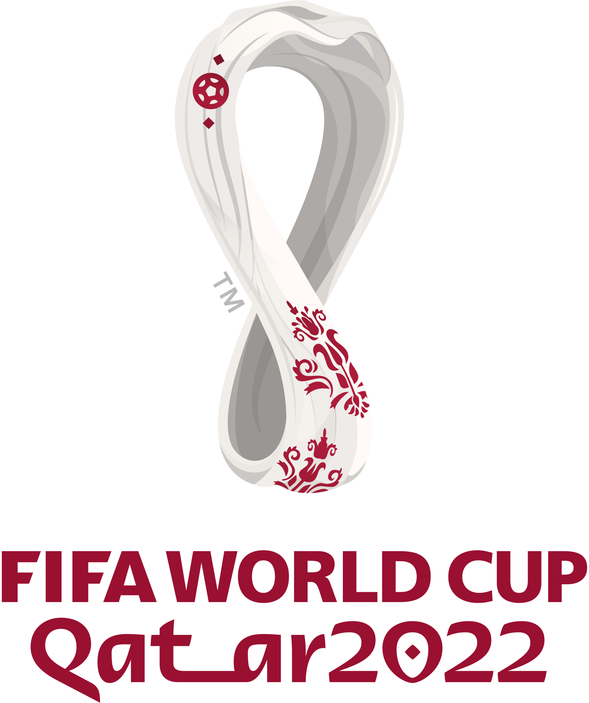

<!DOCTYPE html>
<html lang="hu">
<head>
    <meta charset="UTF-8">
    <meta http-equiv="X-UA-Compatible" content="IE=edge">
    <meta name="viewport" content="width=device-width, initial-scale=1.0">
    <title>'2022-es labdarúgó-világbajnokság | Statisztikák</title>
</head>
<body>
    
</body>
</html>
    <meta http-equiv="X-UA-Compatible" content="IE=edge">
    <meta name="viewport" content="width=device-width, initial-scale=1.0">
    <link rel="stylesheet" href="css\sajat.css">


    <div class="container">

        <nav class="navbar navbar-expand-lg navbar-light bg-light">
            <a class="navbar-brand" href="#">
                
            </a>
            <button class="navbar-toggler" type="button" data-bs-toggle="collapse" data-bs-target="#navbarNav" aria-controls="navbarNav" aria-expanded="false" aria-label="Toggle navigation">
                <span class="navbar-toggler-icon"></span>
              </button>
            <div class="collapse navbar-collapse" id="navbarNav">
                <ul class="navbar-nav">
                    <li class="nav-item active">
                        <a class="nav-link">Bevezető</a>
                    </li>
                    <li class="nav-item">
                        <a class="nav-link">Csapatok</a>
                    </li>
                    <li class="nav-item">
                        <a class="nav-link">Címvédők</a>
                    </li>
                    <li class="nav-item">
                        <a class="nav-link">Statisztika</a>
                    </li>
                </ul>
            </div>
        </nav>

        <section>
            <table>
                    <tr>
                        <td>Statisztikák</td>
                        <td></td>
                    </tr>

                    <tr>
                        <td>LABDABIRTOKLÁS</td>
                        <td>53</td>
                    </tr>
                    <tr>
                        <td>LÖVÉS</td>
                        <td>45</td>
                    </tr>
                    <tr>
                        <td>KAPUT ELTALÁLÓ LÖVÉS</td>
                        <td>15</td>
                    </tr>
                    <tr>
                        <td>SÁRGA LAP</td>
                        <td>5</td>
                    </tr>
                    <tr>
                        <td>PASSZ</td>
                        <td>2031</td>
                    </tr>
                    <tr>
                        <td>SIKERES PASSZ</td>
                        <td>1717</td>
                    </tr>
            </table>
        </section>
    </div>